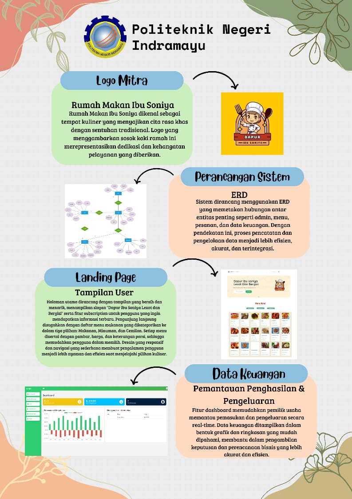
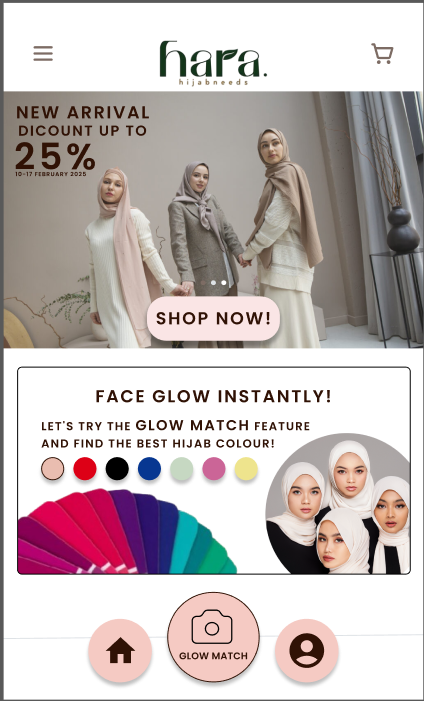

Tentang Saya
Saya adalah mahasiswa D3 Teknik Informatika di Politeknik Negeri Indramayu dengan minat pada bidang UI/UX Design, Web Development, serta pengembangan solusi teknologi berbasis IoT. Saya juga memiliki ketertarikan dalam pengelolaan basis data menggunakan MySQL dan terus mengembangkan kemampuan teknis melalui berbagai proyek akademik.
Selama perkuliahan, saya aktif dalam kegiatan organisasi dan kepanitiaan yang melatih kemampuan kepemimpinan, komunikasi, dan manajemen waktu. Saya terpilih sebagai Juara 1 Putri Duta Polindra 2024 dan menjabat sebagai Sekretaris II Duta Polindra. Selain itu, saya dipercaya sebagai Bendahara I pada Grand Final Duta Polindra 2025 dengan tanggung jawab pengelolaan anggaran sebesar Rp16.000.000.
Saya juga terlibat dalam program PKM-PM dan PKM-AI dengan kontribusi dalam pengembangan ide dan penulisan ilmiah. Melalui pengalaman akademik dan organisasi tersebut, saya terbiasa bekerja secara terstruktur, kolaboratif, dan bertanggung jawab, serta siap mengembangkan kemampuan profesional melalui program magang di bidang teknologi informasi.
Proyek Saya

Website Sistem Manajemen Informasi
Rumah Makan Seafood Dapur Ibu Soniya

Notulensi Duta Polindra

Sistem Monitoring Kamera Berbasis Iot dan Pelacakan Rute Melalui GPS Smartphone pada Mobil Pengangkutan Sampah untuk Efisiensi Operasional

Sistem Rekomendasi Hijab Berbasis Artificial Intelligence dan Image Processing pada Aplikasi Web dan Mobile
Kontak Saya
Email: suliswatunhasanah1@gmail.com
Whatsapp: 082121032697